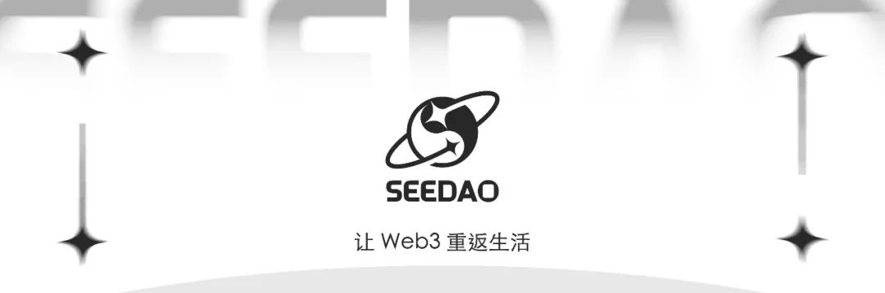

SeeDAO | 调整 WRT 空投行为准则的提案
作者: 翻译公会 Jazzy
分类:
经典DAO治理提案, SeeDAO翻译公会
原文链接：https://gov.gitcoin.co/t/proposal-to-adjust-code-

原文链接：
https://gov.gitcoin.co/t/proposal-to-adjust-code-of-conduct-wrt-airdrops/8383
本人提议在 Gitcoin 行为准则 中加入以下内容。可能会有空投，但你未必有资格获得。随着时间的推移，Gitcoin Grants 业已成为该生态的重要支柱 —— 越来越多的项目有赖于它的支持。Gitcoin Grants 的终身众筹贡献已经超过 100 万次，因此成了一个数据源，让人们得以了解哪些项目受社区重视，以及生态中都有谁在支持这些项目。给予 Gitcoin 贡献者的空投，一贯遵循＂不可求之，有则感恩＂的社会规范。我们希望社区贡献者知晓提案获得通过的治理流程，并参与其中。关于空投事宜，我们希望社区成员能够态度得体，不应将其视为理所当然，除非某项治理提案赋予他们在特定时间得到空投的特定权利。任何与空投有关的无礼、骚扰、自以为是或扰乱行为都违反行为准则。本提案的部分动机基于 Vitalik（二次方融资的设计者）的 这篇文章。文中用以下图谱对符合 QF （二次方融资）设计目标的 Grants 贡献动机类型进行了勾勒：因为你的贡献 + 匹配的投资，让你从项目中的收益更大本提案的第二个动机来自本人在 Gitcoin Discord 的公共频道互动时的体验。好几个成员向我坦承他们加入的目的就是拿空投，否则就不会向 Gitcoin Grants 做贡献。某些情况下，这类对话变得咄咄逼人。一些贡献者觉得有权依照他们自己的时间表得到某次空投，然而，不通过 合法的治理流程，Gitcoin Steward 或团队就不能进行交付。此时，交流就会变得火气十足。将该政策正式加入行为准则，将会让这类贡献者明白：仅仅为了获得空投才进行贡献的做法是不值得的。作者：Kevin Owocki
翻译：Jazzy
校对：Roy
排版：小姚
审核：Ines